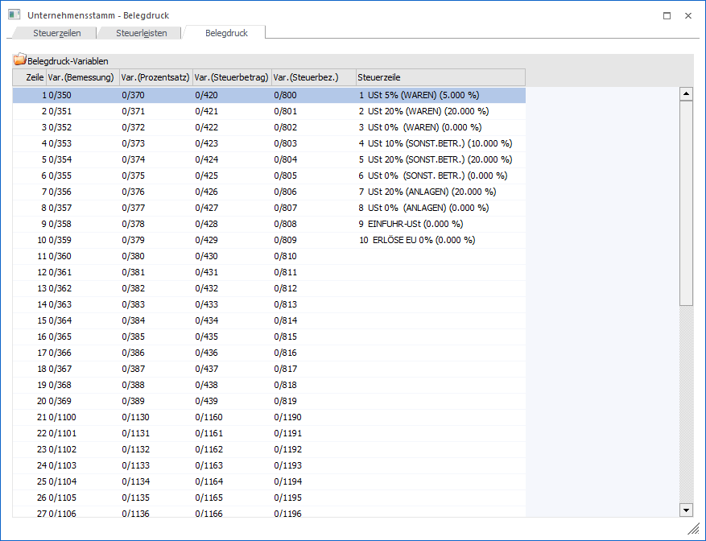
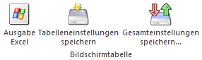

Im Register "Unternehmstamm-Belegdruck" können Steuerzeileninfos für den Belegdruck verschiedenen Variablen zugeordnet werden.
Achtung
Dieses Register ist nur verfügbar, wenn der Menüpunkt "Unternehmensstamm" in der Applikation "WinLine Fakturierung" aufgerufen wird!

In der Tabelle werden 50 Zeilen mit jeweils den Variablen für "Bemessung", "Prozentsatz", "Steuerbetrag" und "Kurzbezeichnung der Steuerzeile" angezeigt. In der Spalte Steuerzeile kann dann den Variablen die gewünschte Steuerzeile zugewiesen werden, wobei die Zuweisung einer Steuerzeile nur 1x verwendet werden darf. D.h. wird z.B. die Steuerzeile 1 der Tabellenzeile 1 zugewiesen, so darf dies nicht nochmals für Tabellenzeile 2 erfolgen.
Für den Fall, dass einer Variable keine Steuerzeile zugewiesen werden soll, muss der Eintrag "keine Steuer" zugewiesen werden.
Beispiel (lt. Screenshot)
In der Zeile 3 werden die Variablen 0/352, 0/372, und 0/422 angezeigt. Durch Zuordnung der Steuerzeile 3 werden die entsprechenden Werte dieser Steuerzeile in die angeführten Variablen "geschrieben" und können somit am Beleg angedruckt werden.
Hinweis:
Für die Hinterlegung der Steuerzeilen bzw. für den Eintrag "keine Steuer" gilt folgende Regel:
- wird eine Steuerzeile den Belegdruck-Variablen zugewiesen, so können die Werte dazu mit den angegebenen Platzhaltern angedruckt werden.
- ist eine Steuerzeile keiner Belegdruck-Variable zugewiesen, und wird diese Steuerzeile im Beleg verwendet, so werden die entsprechenden "Steuer"-Werte aus der Artikelzeile in der ersten "freien" Belegdruck-Variablen-Zeile gespeichert.
Beispiel 1:
Die Steuerzeile 1 ist den Belegdruck-Variablen der ersten Zeile zugewiesen (0/350, 0/370, 0/420, 0/800).
Die Steuerzeile 2 ist den Belegdruck-Variablen der zweiten Zeile zugewiesen (0/351, 0/371, 0/421, 0/801).
Ansonsten ist keine weitere Zuordnung vorhanden
Im Beleg werden 3 Artikelzeilen erfasst, wobei der erste Artikel die Steuerzeile 1, der zweite Artikel die Steuerzeile 2, und der dritte Artikel die Steuerzeile 113 angegeben hat.
Für die ersten beiden Artikel werden die Belegdruck-Variablen lt. Zuweisung befüllt.
Für den dritten Artikel werden die Variablen aus der dritten Zeile in der Zuordnungstabelle (0/352, 0/372, 0/422, 0/802) befüllt, da dies die erste "freie" Zeile ist.
Beispiel 2:
Die Steuerzeilen 1 bis 4 sind den Belegdruck-Variablen der ersten 4 Zeilen zugewiesen.
Die Steuerzeilen 6 bis 10 sind den Zeilen der Belegdruck-Variablen 6 bis 10 zugewiesen.
Die Zeile 5 (0/354, 0/374, 0/424, 0/804) erhält keine Zuweisung.
Im Beleg werden 4 Artikelzeilen erfasst, die die Steuerzeile 1 bis 4 hinterlegt haben.
Weiters werden 4 Artikel erfasst, die die Steuerzeilen 6 bis 10 hinterlegt haben, und ein weiterer Artikel, der die Steuerzeile 113 hinterlegt hat.
Für jene Artikel, die die Steuerzeilen 1 bis 4 und 6 bis 10 hinterlegt haben, gilt die Zuordnung zu den Variablen lt. Zuordnungstabelle, für den Artikel mit der Steuerzeile 113 werden die Variablen aus der Zeile 5 der Zuordnungstabelle (0/354, 0/374, 0/424, 0/804) befüllt, da dies die erste "freie" Zeile ist.
Tabellenbuttons

Ø Ausgabe Excel
Durch Anwahl des Buttons "Ausgabe Excel" wird der Inhalt der Tabelle nach Microsoft Excel übergeben.
Ø Tabelleneinstellungen speichern
Die Spalten einer Tabelle können grundsätzlich an beliebige Positionen verschoben, bzw. in der Breite entsprechend angepasst werden. Durch Anwahl des Buttons "Tabelleneinstellungen speichern" werden die Einstellungen benutzerspezifisch gespeichert und bei dem nächsten Aufruf des Programmpunktes wieder vorgeschlagen.
Ø Gesamteinstellungen speichern
Im Gegensatz zu "Tabelleneinstellungen speichern" können mit "Gesamteinstellungen speichern" mehrere Tabellenaufbauten gespeichert und nach Wunsch geladen werden. Zusätzlich werden Sonderfunktionen der Tabelle (z.B. "Spalte gruppieren") ebenfalls bei der Speicherung bedacht.
Buttons
Ø Ok
Durch Anwahl des Buttons "Ok" bzw. der Taste F5 werden die Zuordnungen gespeichert.
Ø Ende
Durch Anwahl des Buttons "Ende" bzw. der Taste ESC wird das Fenster geschlossen und alle Änderungen verworfen.